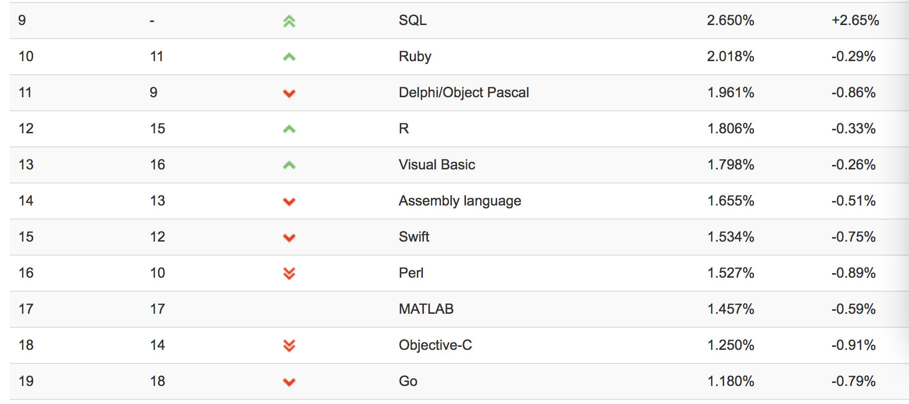

2014年6月2号，苹果发布了一个新的面向对象的语言：Swift，做为Objective-C的替代者。作为一门新的语言，Swift在简单易用上面获得了大量的好评，从而它的上升速度是非常快的。

从图中可以看到，Swift的排名已经超越了Objective-C。虽然在中国可能还大部分在使用Objective-C开发，但是逐渐转换为Swift是一个不可逆的趋势。
接下去我们将从以下10个方面展示Swift和Objective-C的不同。
- 可选(Optionals)
- 控制流
- 类型推断
- 元组
- 字符串操作
- Guard&Defer
- 函数式编程
- 枚举
- 函数
- Do关键字
可选
可选的概念在C或者Objective-C中是不存在的。它意味着这个返回值可能有或可能为nil。我们知道，在Objective-C中，一个方法可能返回一个对象或可能返回nil。但是对于基本类型int、float等，则是没有可选的返回的。但是对于Swift而言，则是
let a = "48"
let b = Int(a)
print(b!)
//output
Optional(48)Int函数这边返回一个可选类型，里面包含一个48的值。但是如果原先的字符串不是数字呢？
let aa = "error"
let bb = Int(aa)
print(bb)
//output
nil从这边我们可以看到，它返回了一个nil。因为Int函数无法将非数字的字符串转换为Int。
我们知道对于Objective-C，如果你对nil发送消息，那将什么都不会发生。但是对于Swift，编译器则会直接报错。
var x = Int("188")
print(x+1)
//output
error如果要使用的话，就必须强制解包，可以用以下两种方式：
var x = Int("188")
print(x!+1) //1.强制解包
if var y = x { //2.optional绑定
y += 811
print(y)
}控制流
对于C语言或者Objective-C，你可能对({})非常熟悉。if语句或者for语句都会用到。或者可以简写去掉({})。但是对于Swift，你必须使用{}，但是()可以去掉。
let xx = 4
if xx < 5 {
print(xx)
}类型推断
Swift引入了类型安全机制。一旦一个变量被申明为一个类型，那么就不能再改变了。同时编译器能够根据赋的值推断出相应的类型。
var str = "Some string"
// OR
var str2:String
str2 = "Other string"而对于Objective-C，你必须显式的申明一个变量：
NSString str = @"There is no type inference in Objective-C :("元组
Swift支持元组类型，它存储一组值。跟数组不同，元组中的类型不必相同的。比如：
var t:(String, Int) = ("John", 33)
print(t.0, t.1)
var j:(name:String, Int) = ("Morgan", 52)
print(j.name, j.1)元组使用最多的是在函数的返回中：
var arr = [23, 5, 7, 33, 9]
func findPosition(el:Int, arr:[Int]) -> (found:Bool, position:Int)? {
if arr.isEmpty {
return nil
}
for (i, value) in arr.enumerated() {
if value == el {
return (true, i)
}
}
return (false, -1)
}
if let (isFound, elPosition) = findPosition(el: 5, arr: arr) {
print(isFound, elPosition)
// true 1
}在Objective-C中，可以用BLOCK来实现相似的效果，但是跟元组相比，显然麻烦多了。
字符串操作
Swift在字符串操作上面相比Objective-C有巨大的提高。你不必为可变和非可变字符串困扰，对于不可变的，就使用let，对于可变的是，就使用var.
在Swift中，字符串聚合是非常方便的：
// Swift:
var str = "My string"
str += " and another string”而在Objective-C中，则是非常麻烦的。
// Obj-C:
NSString *myString = @"My string";
myString = [NSString stringWithFormat:@"%@ and another string", myString];同时在Objective-C你需要使用占位符来表示不同类型的数据。但是在swift则完全不需要，直接用()包含就行。
var str = "String: \(myString) | Signed 32-bit integer: \(myInt) | 64-bit floating-point number: \(myFloat)"Guard&Defer
在Objective-C中，当你逻辑复杂，需要层层判断时，往往会出现以下代码：
enum TriangleAreaCalcError: Error {
case AngleNotSpecified
case InvalidAngle
case SideANotSpecified
case SideBNotSpecified
}
func calcTriangleArea(a: Double? , b : Double? , alpha : Double? ) throws -> Double {
if let a = a {
if let b = b {
if let alpha = alpha {
if alpha < 180 && alpha >= 0 {
if alpha == 180 {
return 0
}
return 0.5 * a * b * sin(alpha * Double.pi / 180.0)
} else {
throw TriangleAreaCalcError.InvalidAngle
}
} else {
throw TriangleAreaCalcError.AngleNotSpecified
}
} else {
throw TriangleAreaCalcError.SideBNotSpecified
}
} else {
throw TriangleAreaCalcError.SideANotSpecified
}
}这看上去就像一个金字塔，可读性非常差。而在Swift中，你可以使用guard关键字。它表示如果条件不满足，则进入逻辑。
func calcTriangleArea(a: Double? , b : Double? , alpha : Double? ) throws -> Double {
guard
let a = a
else {
throw TriangleAreaCalcError.SideANotSpecified
}
guard
let b = b
else {
throw TriangleAreaCalcError.SideBNotSpecified
}
guard
let alpha = alpha
else {
throw TriangleAreaCalcError.AngleNotSpecified
}
if alpha == 180 {
return Double(0)
}
guard alpha < 180 && alpha >= 0
else {
throw TriangleAreaCalcError.InvalidAngle
}
return 0.5 * a * b * sin(alpha * Double.pi / 180.0)
}Swift同时提供了defer关键字，用于在退出当前范围之前执行的操作逻辑。
func someImageFunc() -> UIImage? {
let dataSize: Int = 64
let destData = UnsafeMutablePointer<UInt8>.allocate(capacity: dataSize)
// ...
guard error1
else {
destData.dealloc(dataSize) // #1
return nil
}
guard error2
else {
destData.dealloc(dataSize) // #2
return nil
}
guard error3
else {
destData.dealloc(dataSize) // #3
return nil
}
destData.dealloc(dataSize) // #4
// ...
}从中我们可以看到，执行了4次dealloc函数来保证在退出函数之前指针被释放。但是有了defer之后，我们只要写一次就可以了
func someImageFunc() -> UIImage? {
let dataSize: Int = 64
let destData = UnsafeMutablePointer<UInt8>.allocate(capacity: dataSize)
// ...
defer {
destData.dealloc(dataSize)
}
guard error
else {
return nil
}
guard error2
else {
return nil
}
guard error3
else {
return nil
}
// ...
}函数式编程
Swift引入了大量函数式编程特征，比如map和filter，它可以在任何实现了CollectionType协议的集合上使用。
let a = [4, 8, 16]
print(a.map{$0 / 2})
// [2, 4, 8]
let b:[(name:String, area:String)] = [("John", "iOS"), ("Sam", "Android"), ("Paul", "Web")]
let c = b.map({"Developer \($0.name) (\($0.area))"})
// ["Developer John (iOS)", "Developer Sam (Android)", "Developer Paul (Web)”]
let d = [23, 5, 7, 12, 10]
let e = d.filter{$0 > 10}
print(e) // [23, 12]
let sum = (20...30)
.filter { $0 % 2 != 0 }
.map { $0 * 2 }
.reduce(0) { $0 + $1 }
print(sum) // 250而Objective-C原生是不支持这些函数式编程特征的，除非使用第三方库。
枚举
在Swift中，枚举是非常强大的。它可以包含方法，可以传参等。以下列举了一些用法：
enum Location {
case Address(city: String, street: String)
case Coordinates(lat: Float, lon: Float)
func printOut() {
switch self {
case let.Address(city, street):
print("Address: " + street + ", " + city)
case let.Coordinates(lat, lon):
print("Coordiantes: (\(lat), \(lon))")
}
}
}
let loc1 = Location.Address(city: "Boston", street: "33 Court St")
let loc2 = Location.Coordinates(lat: 42.3586, lon: -71.0590)
loc1.printOut() // Address: 33 Court St, Boston
loc2.printOut() // Coordiantes: (42.3586, -71.059)枚举同时可以递归，通过indirect关键字来实现
enum List {
case Empty
indirect
case Cell(value: Int, next: List)
}
let list0 = List.Cell(value: 1, next: List.Empty)
let list1 = List.Cell(value: 4, next: list0)
let list2 = List.Cell(value: 2, next: list1)
let list3 = List.Cell(value: 6, next: list2)
let headL = List.Cell(value: 3, next: list3)
func evaluateList(list: List) - > Int {
switch list {
case let.Cell(value, next):
return value + evaluateList(next)
case .Empty:
return 0
}
}
print(evaluateList(headL)) // 16函数
Swift的函数语法是非常随意的，既可以像C语言风格的，也可以像Objective-C语言风格的。在Swift中，每个函数都有一个类型，它由函数的参数和返回值组成。这表示你能够指定函数的变量或者把函数作为参数传给另一个函数。
func stringCharactersCount(s: String) -> Int {
return s.characters.count
}
func stringToInt(s: String) -> Int {
if let x = Int(s) {
return x
}
return 0
}
func executeSuccessor(f: (String) -> Int, s: String) -> Int {
return f(s)+1
}
let f1 = stringCharactersCount
let f2 = stringToInt
executeSuccessor(f: f1, s: "5555") // 5
executeSuccessor(f: f2, s: "5555") // 5556Swift同时允许你定义一个函数参数的默认值。
func myFunction(someInt: Int = 5) {
// If no arguments are passed, the value of someInt is 5
}
myFunction(6) // someInt is 6
myFunction() // someInt is 5Do关键字
do关键字允许你进入一个新的范围。
let a = "Yes"
do {
let a = "No"
print(a) // No
}
print(a) // Yesdo关键字同时允许包含一个或者多个catch分句。
do {
try expression
statements
} catch pattern 1 {
statements
} catch pattern 2 where condition {
statements
}